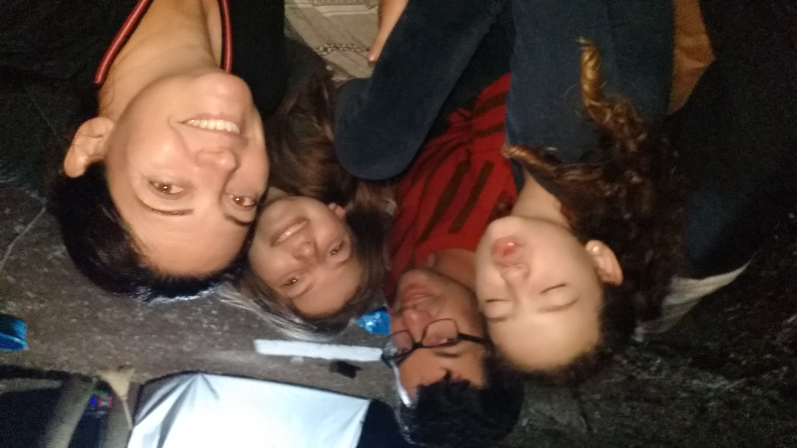
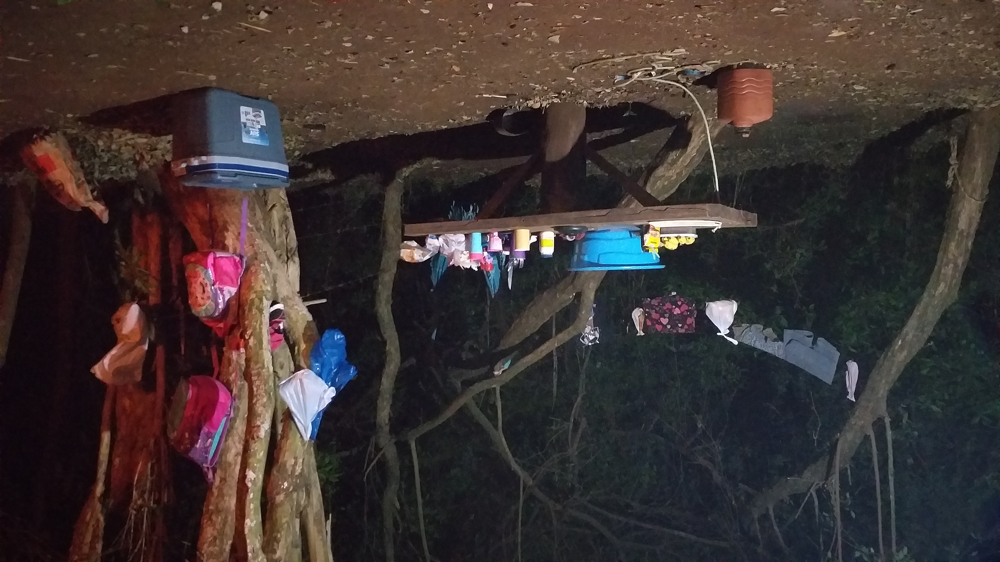
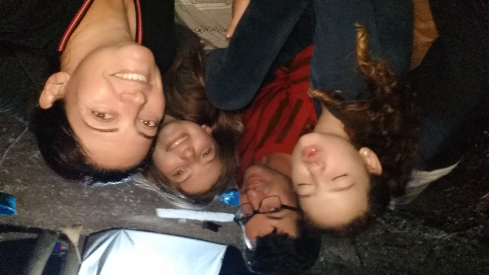
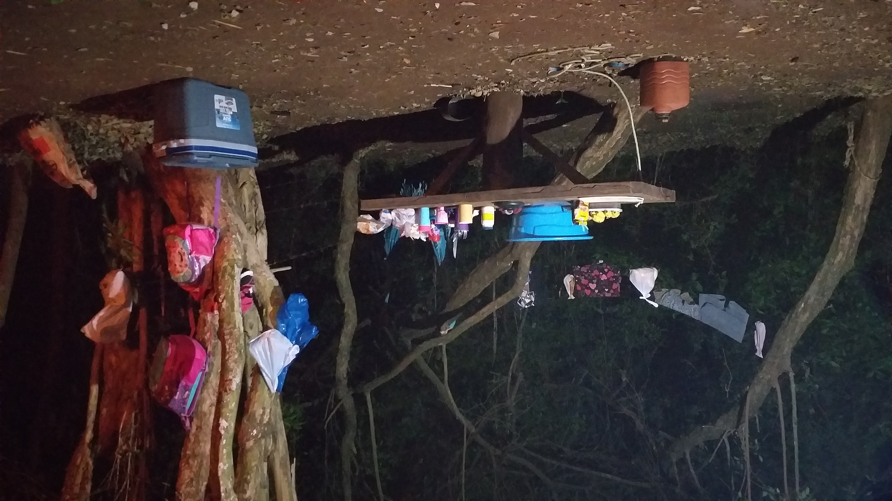

Acampamento
Um acampamento é uma atividade ao ar livre na qual as pessoas, geralmente em um grupo, passam um período de tempo fora de casa, muitas vezes em áreas naturais, para desfrutar da natureza e realizar várias atividades recreativas. Os acampamentos podem variar em termos de estilo, duração e nível de conforto, desde acampamentos rústicos em barracas até acampamentos mais sofisticados com cabanas ou instalações de camping de luxo.
Existem vários tipos de acampamentos, incluindo acampamentos de verão para crianças e adolescentes, acampamentos familiares, acampamentos de aventura, acampamentos de montanha, acampamentos de pesca, entre outros..
Os acampamentos geralmente oferecem uma variedade de atividades, como caminhadas como: canoagem, natação, pesca, fogueiras, jogos ao ar livre e educação ambiental. A seleção de atividades pode variar dependendo do tipo de acampamento e da localização.
O equipamento de acampamento básico inclui uma barraca, saco de dormir, isolante térmico, fogareiro, utensílios de cozinha, comida, roupas adequadas e equipamento de segurança. A escolha do equipamento depende do tipo de acampamento e das condições climáticas.
A segurança é fundamental ao acampar. Isso inclui conhecer e respeitar as regras do local de acampamento, estar preparado para mudanças climáticas, levar equipamento de primeiros socorros e seguir boas práticas de proteção ambiental.
Um planejamento adequado é essencial. Isso envolve a seleção de um local de acampamento apropriado, a verificação das condições climáticas, a obtenção de permissões (se necessário) e a comunicação de seu itinerário a alguém de confiança.
É importante deixar o local de acampamento exatamente como você o encontrou, respeitando a natureza e não deixando lixo ou danos,
e se você é novo no acampamento, considere participar de acampamentos organizados por grupos experientes ou buscar orientações de campistas experientes.
 


